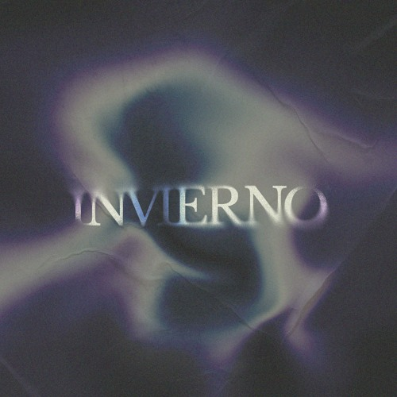
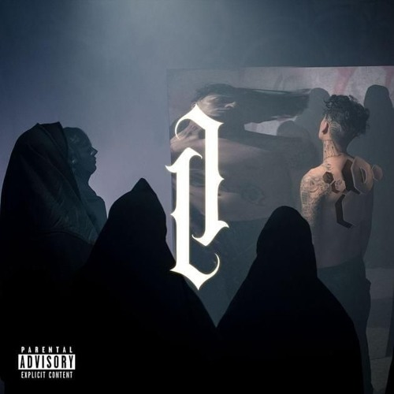

Una canción un poco más de desahogo que te transmite un sentimiento increible, además de la ganas de gritar cada parte, esta canción además de "Lo Escribí Un Mal Dia De Noviembre" del mismo artista son canciones que te hacen gritar dolido aunque estés feliz haha.
La canción es un claro ejemplo del éxito de Metallica en fusionar el metal con elementos accesibles para un público más amplio, lo que contribuyó a su popularidad masiva en la década de 1990.
Una de las canciones que me pegó mi hermano mayor, nada que decir de ella por que todos la han escuchado alguna vez, una canción de las de ley.

Una canción que salió nadamás por los memes que recibia el artista, pero de ese chiste salió una joya que no puede faltar cuando vas manejando con los bajos al millón
